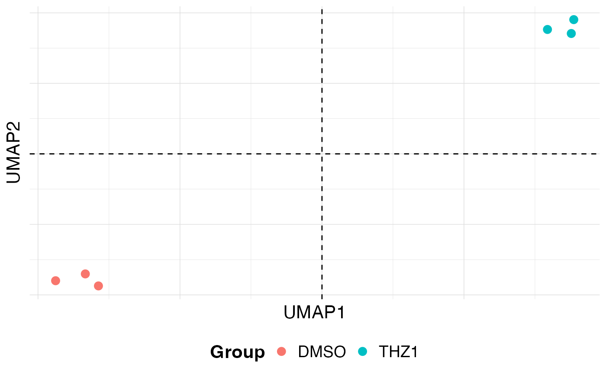

This function creates a simple plot of the data.frame returned by the
umap() function.
Usage
plot_umap(
df,
x = "UMAP1",
y = "UMAP2",
colBy = NULL,
shapeBy = NULL,
pointSize = 3,
pointAlpha = 1,
hline = 0,
vline = 0,
hlineType = 2,
vlineType = 2
)Arguments
- df
data.frame of UMAP embeddings and metadata
- x
First UMAP component. Default "UMAP1"
- y
Second UMAP component. Default "UMAP2"
- colBy
Column name of data.frame to color points by. Default NULL
- shapeBy
Column name of data.frame to shape the points by. Default NULL
- pointSize
Size of the points. Default 3
- pointAlpha
Alpha level of the points. Default 1
- hline
y-position of horizontal line. Default 0
- vline
x-position of vertical line. Default 0
- hlineType
linetype of the horizontal line. Default 2
- vlineType
linetype of the vertical line. Default 2
Examples
# Create metadata for plotting
metadata <- data.frame(row.names = colnames(GSE161650_lc))
metadata$Group <- rep(c("DMSO", "THZ1"), each = 3)
# PCA with PCAtools
p <- PCAtools::pca(GSE161650_lc, metadata, center = TRUE, scale = TRUE)
udata <- coriell::UMAP(p, n_neighbors = 2)
#> Warning: failed creating initial embedding; using random embedding instead
#> Warning: failed creating initial embedding; using random embedding instead
plot_umap(udata, colBy = "Group")
